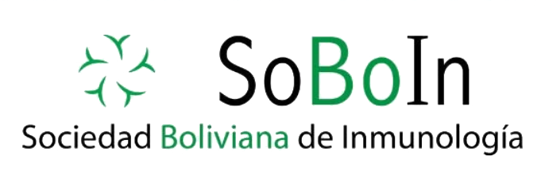
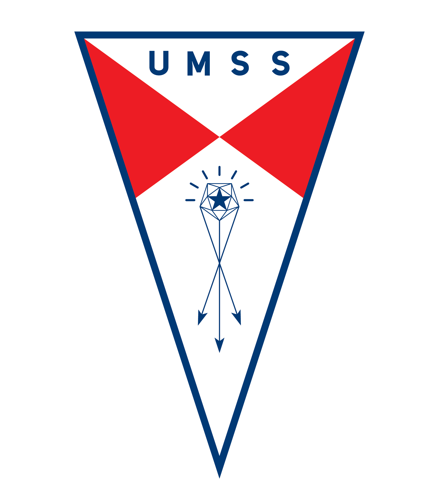
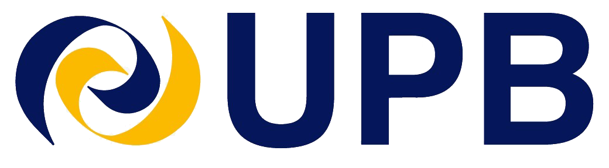
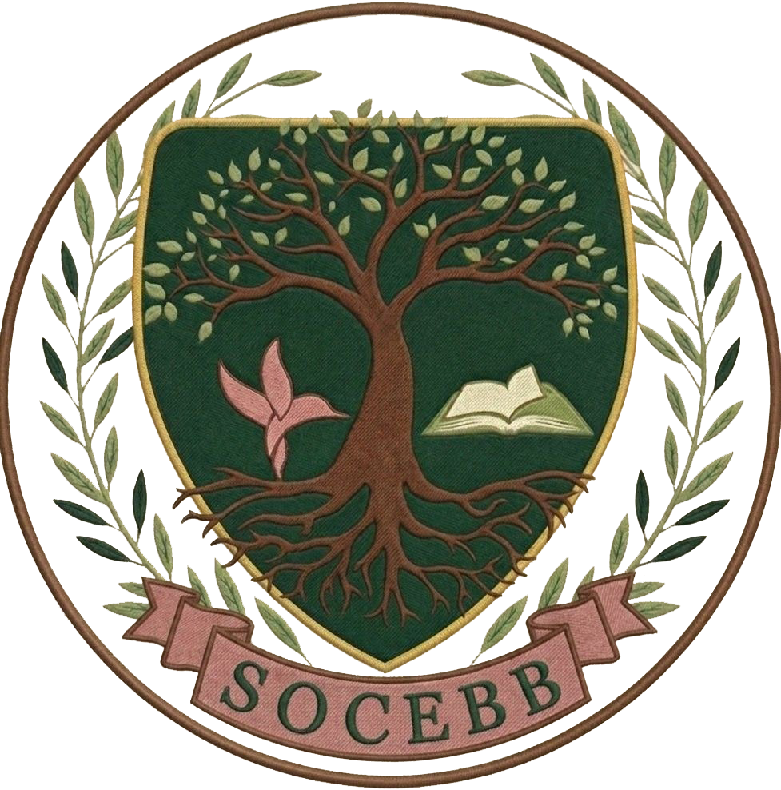
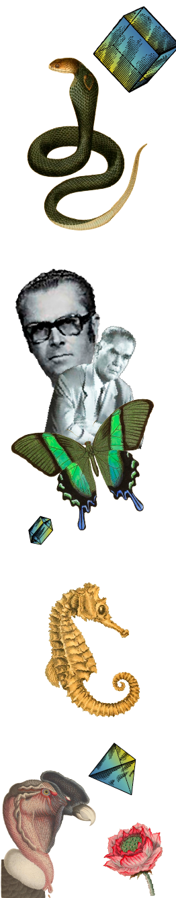
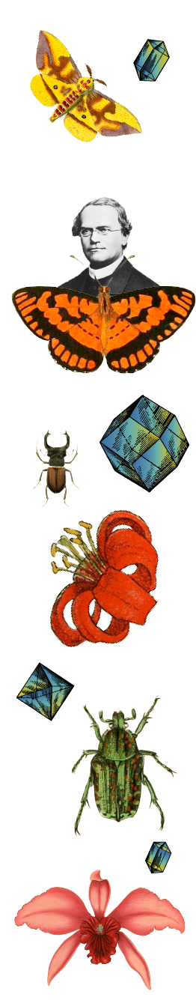
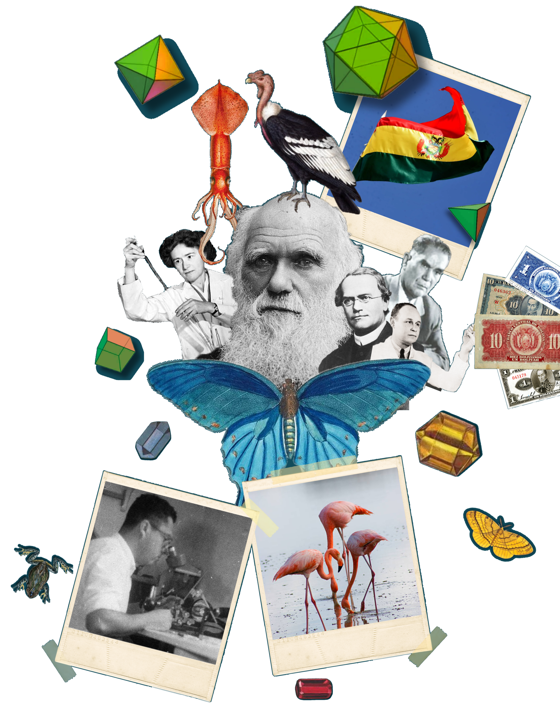
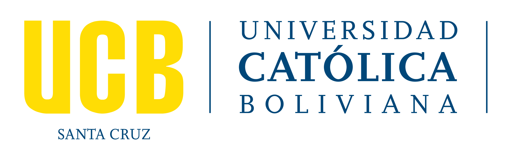

Instituciones participantes








IV Congreso Internacional de
BIOTECNOLOGÍA
10-12 de diciembre de 2026
Facultad de Biotecnología
Universidad Católica Boliviana "San Pablo"
Santa Cruz de la Sierra, Bolivia
Tres días para conectar la investigación biotecnológica boliviana con la empresa, la inversión y la política pública.

Facultad de Biotecnología, Universidad Católica San Pablo, Sede Santa Cruz, y el grupo Bolivia Innova.
Bolivia tiene la biodiversidad necesaria para una biotecnología propia, pero su último registro de inversión en investigación no llega a un tercio del promedio regional. La brecha es de conocimiento aplicado, no de recursos.
Cerrarla exige hacer visible la investigación nacional, conectarla con la empresa y convertirla en política pública. El congreso reúne en Santa Cruz de la Sierra a científicos, emprendedores, inversionistas, autoridades y estudiantes para avanzar en los tres.
El programa combina exposición científica con espacios de negocio, formación y encuentro.
Priorizamos trabajos originales e inéditos, relevantes para la biotecnología y explicados con claridad: el público incluye estudiantes, empresas, gestores y medios.
En español y en .docx, con la plantilla oficial. Título de hasta 20 palabras, hasta 8 autores y un cuerpo de 250–300 palabras: introducción y objetivos, materiales y métodos, resultados y conclusiones. Cierra con “¿Por qué importa?”, de 40–60 palabras en lenguaje accesible.
Se admiten si indicas la referencia completa de la publicación original (autores, título, revista o libro, año, volumen, páginas y DOI) y si aportan valor a la discusión científica, la transferencia de conocimiento o el debate interdisciplinario.
A0 vertical, en español, con un máximo de 800 palabras y 4–6 figuras o tablas, legible a 1,5–2 metros. Cada presentador puede enviar hasta dos resúmenes y debe estar inscrito antes de la fecha límite.
Tres días, del jueves 10 al sábado 12 de diciembre, con 15–20 ponentes nacionales e internacionales. Publicaremos el programa completo y la lista de ponentes en esta página.
Presencial en Santa Cruz de la Sierra, con transmisión en vivo. En español e inglés.
Para presentar un trabajo, el autor presentador debe inscribirse antes del 30 de noviembre.
Patrocinios y alianzas: escríbenos a congresoboliviainnova@gmail.com.




Hasta el 30 de noviembre de 2026, a través de la plataforma de envío y con la plantilla oficial.
Sí, siempre que indiques la referencia completa de la publicación original y que el trabajo sea relevante para el congreso. Damos prioridad a los trabajos inéditos.
Resúmenes y pósteres van en español. Las sesiones del congreso son en español e inglés.
Hasta dos por autor presentador, que debe estar inscrito antes de la fecha límite.
Sí. El congreso es presencial en Santa Cruz de la Sierra, con transmisión en vivo.